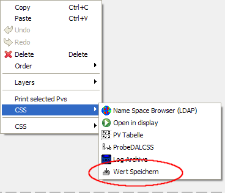
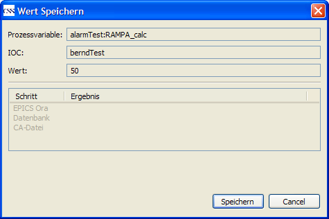
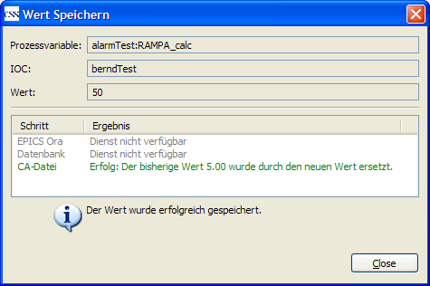
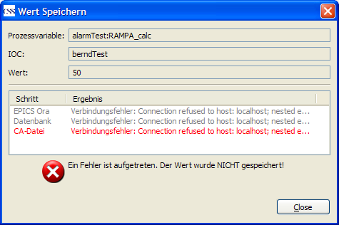

Do translate this file !!!
The command "save value" saves permanent the value which is set for a PV, in a way, that it will be used automatically at the next IOC boot process.
"save value" is located in the SDS widgets context menu; modification of values is possible (text input, slider). Tis topic is also available for other objects, which contain a PV and a value.

After having called the function via the context menu the dialog window "Save Value" will be displayed.

In this dialog window one can check before save, whether the value to be saved is correct. In the upper part of the window the PV, the correwsponding IOC and the value were shown. Finally ress the button "SSave".
Klicking "save" saves the value using some technical services. The progress of the save operation is displayed in the dialog window. At the end the result of every service will be shown. In the lower part of the dialog is shown, whether the save operation at all was successful. the following screenshot shows the dialog after a successful save operation of a value:

The result of the first both steps, "Service not available", can be ignored in this example, because both services are not reequired. This is made visible by the gray presentation of the error messages. (see also Chapter "error messages")
Whenever a value cannot be stored, an error symbol and a corresponding message is displayed:

The table presentation of the services results shows a precise hint to the error reason in this case. In the screenshot example : a connetion with the server could not be established.
This chapter shows an overview about the feasible error messages, which can appear using the Save Value function, and also the correspondig error reasons.
Direkt nach dem Aufruf der Funktion aus dem Kontextmenu erscheint die Fehlermeldung: Kein Dienst ist als erforderlich konfiguriert. Bitte konfigurieren Sie in den Einstellungen mindestens einen Dienst als erforderlich.
In den Benutzereinstellungen (Preferences) ist keiner der m�chen Dieste als "erforderlicher Dienst" ausgew㧬t. Erforderliche Dienste sind die Dienste, bei denen das save erfolgreich sein muss, damit der Wert insgesamt gespeichert ist. Wenn keiner der Dienste als erforderlich konfiguriert ist, kann die Wert-save-Funktion nicht feststellen, ob ein Wert erfolgreich gespeichert wurde.
Direkt nach dem Aufruf der Funktion aus dem Kontextmen�heint die Fehlermeldung: Der IOC f� Prozessvariable wurde nicht gefunden.
Der Datensatz f� Prozessvariable ist nicht im LDAP-Verzeichnis konfiguriert.
Nach dem Dr�der Schaltfl㢨e "save" erscheint die Meldung: Konnte keine Verbindung zur RMI-Registrierung aufbauen: [weitere Details]
ۢer die RMI-Registry finde die Funktion die zur Durchf� n�en serverseitigen Dienste. Stellen Sie sicher, dass die Registry in den Benutzereinstellungen (Preferences) richtig konfiguriert ist. Die in der Fehlermeldung angegebenen Details geben m�cherweise weitere Hinweise auf die Fehlerursache.
Als Ergebnis eines Schrittes wird gemeldet: Zeit�hreitung
Der Dienst hat nicht innerhalb einer vorgegebenen Zeitspanne (f�kunden) geantwortet. Eventuell ist bei der Verarbeitung auf dem Server ein Problem aufgetreten.
Wenn der Dienst ein erforderlicher Dienst ist, erscheint diese Fehlermeldung in roter Farbe und das save des Wertes ist fehlgeschlagen. Handelt es sich nicht um einen erforderlichen Dienst, erscheint die Meldung in grauer Farbe und kann ignoriert werden.
Als Ergebnis eines Schrittes wird gemeldet: Dienst nicht verf�
Der Dienst wird vom Server nicht angeboten.
Wenn der Dienst ein erforderlicher Dienst ist, erscheint diese Fehlermeldung in roter Farbe und das save des Wertes ist fehlgeschlagen. Handelt es sich nicht um einen erforderlichen Dienst, erscheint die Meldung in grauer Farbe und kann ignoriert werden.
Als Ergebnis eines Schrittes wird gemeldet: Verbindungsfehler: [Details]
Beim Aufruf des Dienstes auf dem Server ist ein technisches Problem aufgetreten. Die in der Fehlermeldung aufgeführten Details geben weitere Hinweise auf die Fehlerursache.
Wenn der Dienst ein erforderlicher Dienst ist, erscheint diese Fehlermeldung in roter Farbe und das save des Wertes ist fehlgeschlagen. Handelt es sich nicht um einen erforderlichen Dienst, erscheint die Meldung in grauer Farbe und kann ignoriert werden.
Als Ergebnis eines Schrittes wird gemeldet: Dienstfehler: [Details]
Der serverseitige Dienst hat die Anfrage erhalten, bei der Bearbeitung ist jedoch ein Fehler aufgetreten. Die Details in der Fehlermeldung geben weitere Hinweise zur Fehlerursache.
Wenn der Dienst ein erforderlicher Dienst ist, erscheint diese Fehlermeldung in roter Farbe und das save des Wertes ist fehlgeschlagen. Handelt es sich nicht um einen erforderlichen Dienst, erscheint die Meldung in grauer Farbe und kann ignoriert werden.